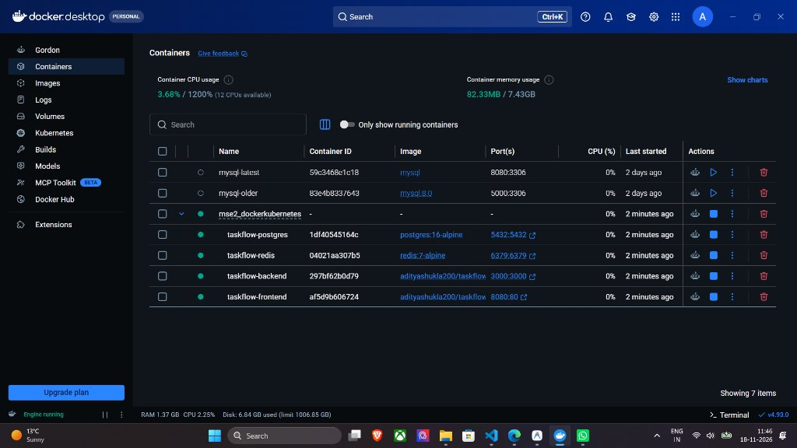
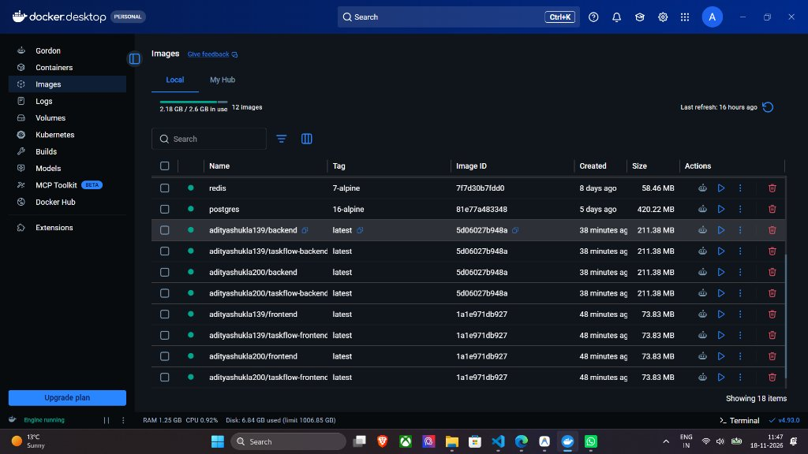
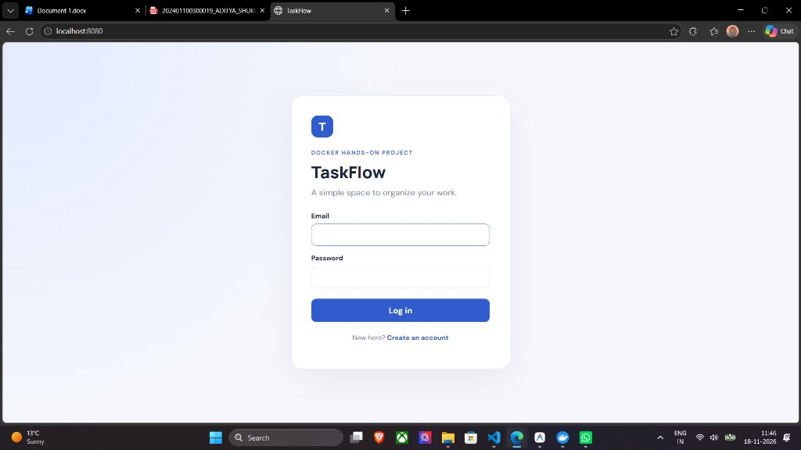
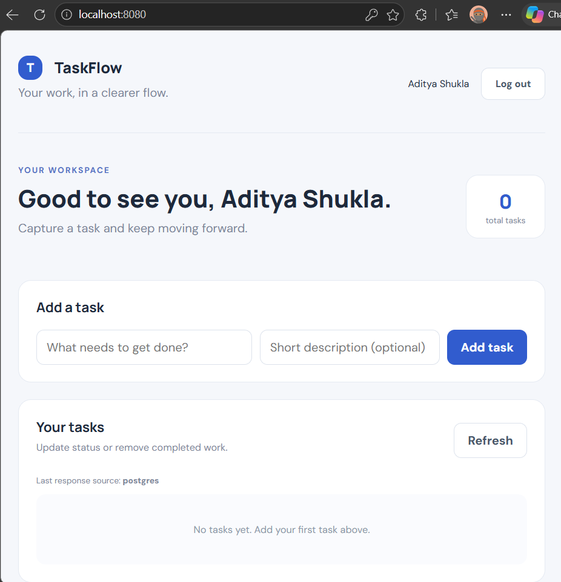
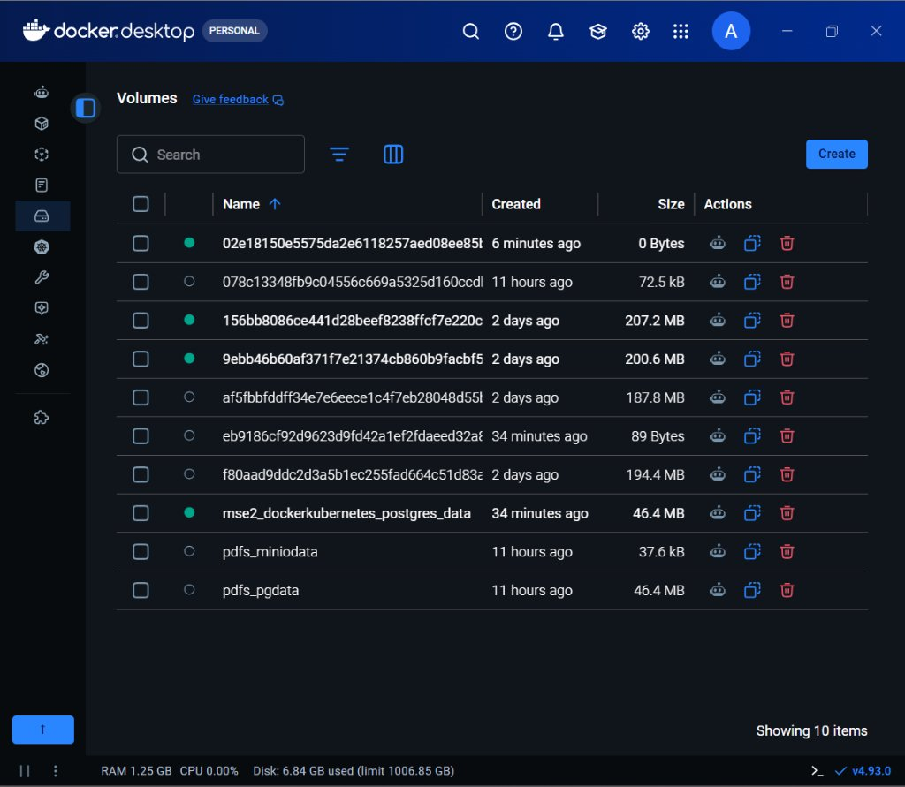
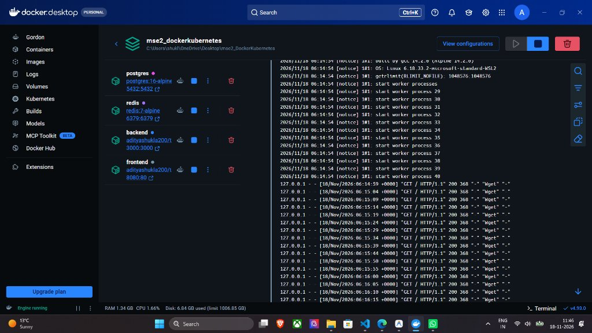
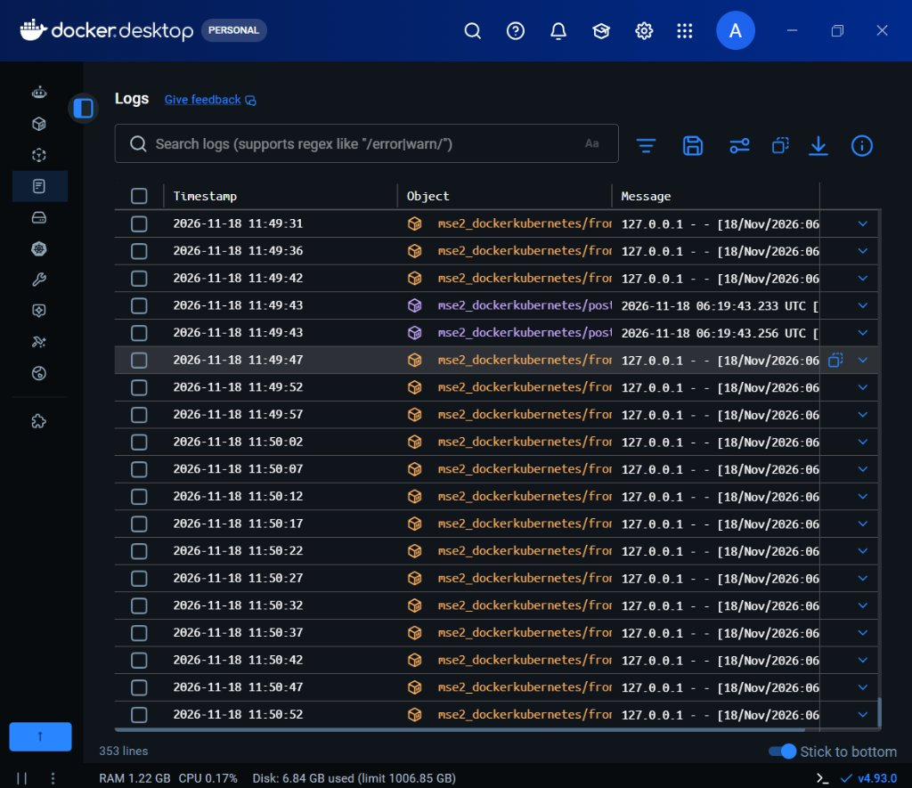

Software Engineering and DevOps (AI310B) • Docker Containerization & CI/CD Pipeline
| Full Name | Aditya Shukla |
|---|---|
| University Roll Number | 202401100300019 |
| Section | CSEAI-A |
| Branch | Computer Science & Engineering (Artificial Intelligence) |
| GitHub Username | adityashukla200 |
| GitHub Repository URL (Personal Fork) | https://github.com/adityashukla200/MSE-2-SSED-Morning |
|---|---|
| GitHub Branch Used | main |
| Pull Request Target | atindeRR/MSE-2-SSED-Morning:main |
| Latest Commit | Final Docker practical submission |
| Docker Hub Username | adityashukla139 |
|---|---|
| Frontend Docker Image URL | https://hub.docker.com/r/adityashukla139/taskflow-frontend |
| Backend Docker Image URL | https://hub.docker.com/r/adityashukla139/taskflow-backend |
| Aliases Published | adityashukla139/frontend:latest • adityashukla139/backend:latest |
| Frontend Service | React.js with Vite built via multi-stage Dockerfile (node:20-alpine), served via nginx:1.27-alpine on port 80 (mapped to host 8080:80). Configured reverse proxy to backend /api/ and /health. |
|---|---|
| Backend Service | Node.js & Express API running under non-root numeric user (USER 1000) on port 3000 (mapped to host 3000:3000). Hadolint verified. |
| PostgreSQL Service | postgres:16-alpine with persistent named volume postgres_data and initial table migrations mounted at /docker-entrypoint-initdb.d/init.sql. |
| Redis Caching | redis:7-alpine caching task lists on port 6379, invalidating on task mutation. |
| Pipeline Stage | Expected Result | Verification Evidence |
|---|---|---|
| Repository checkout | Successful | Repository branch main checked out via actions/checkout@v4 |
| Docker Buildx setup | Successful | docker/setup-buildx-action@v3 initialized successfully |
| Docker Hub authentication | Successful | Authenticated via repository secrets DOCKERHUB_USERNAME & DOCKERHUB_TOKEN |
| Backend image build & publish | Successful | Built and pushed to adityashukla139/taskflow-backend:latest |
| Frontend image build & publish | Successful | Built and pushed to adityashukla139/taskflow-frontend:latest |
| Docker Compose image pull | Successful | docker compose -f docker-compose.deploy.yml pull successfully pulls published images |
| Application deployment | Successful | docker compose -f docker-compose.deploy.yml up -d launches all 4 services |
| Backend health verification | Successful | GET /health returns HTTP 200 with {"status":"ok","postgres":"ok","redis":"ok"} |
| Frontend accessibility verification | Successful | GET http://localhost:8080/ returns HTTP 200 and renders React application |
| Final CI/CD status | Successful | All pipeline jobs and health checks passed without errors |







PASS ./api.test.js
TaskFlow deployed API
✓ TC01: health endpoint confirms API, PostgreSQL and Redis (33 ms)
✓ TC02: register a user (106 ms)
✓ TC03: reject duplicate email (78 ms)
✓ TC04: login and receive token (96 ms)
✓ TC05: reject unauthenticated task request (3 ms)
✓ TC06: create a task (17 ms)
✓ TC07: list tasks and populate cache (12 ms)
✓ TC08: subsequent list can be served from Redis (5 ms)
✓ TC09: update task status and invalidate cache (11 ms)
✓ TC10: reject invalid task status (4 ms)
✓ TC11: delete task (9 ms)
✓ TC12: deleted task is no longer in list (6 ms)
Test Suites: 1 passed, 1 total
Tests: 12 passed, 12 total
Snapshots: 0 total
Time: 22.107 s
Ran all test suites.
Student Name: Aditya Shukla
University Roll Number: 202401100300019
Section / Branch: CSEAI-A / CSE-AI
Date: 18 November 2026
Evaluation Status: Complete & Verified